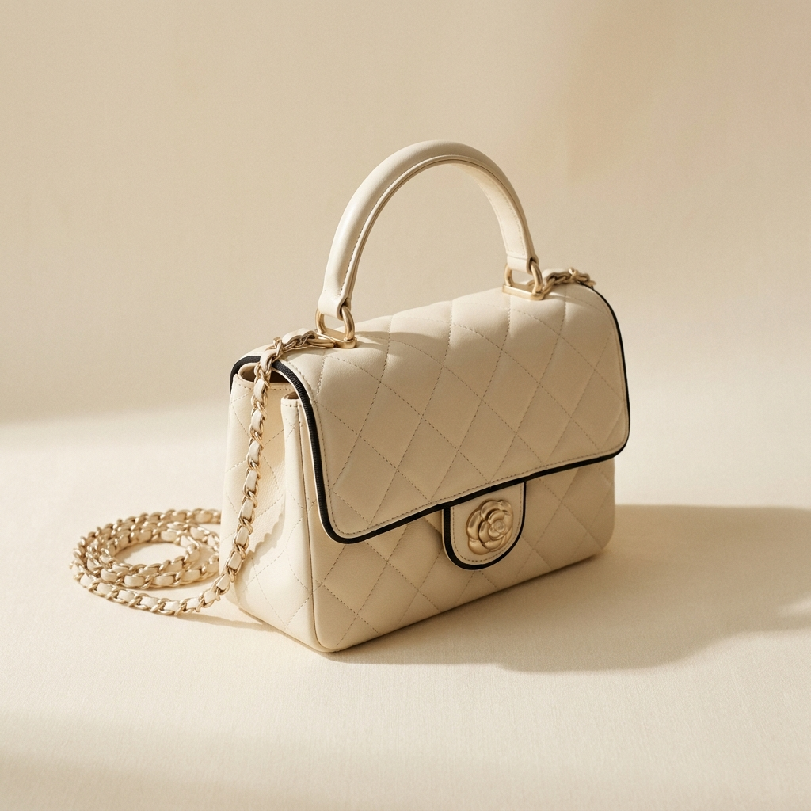
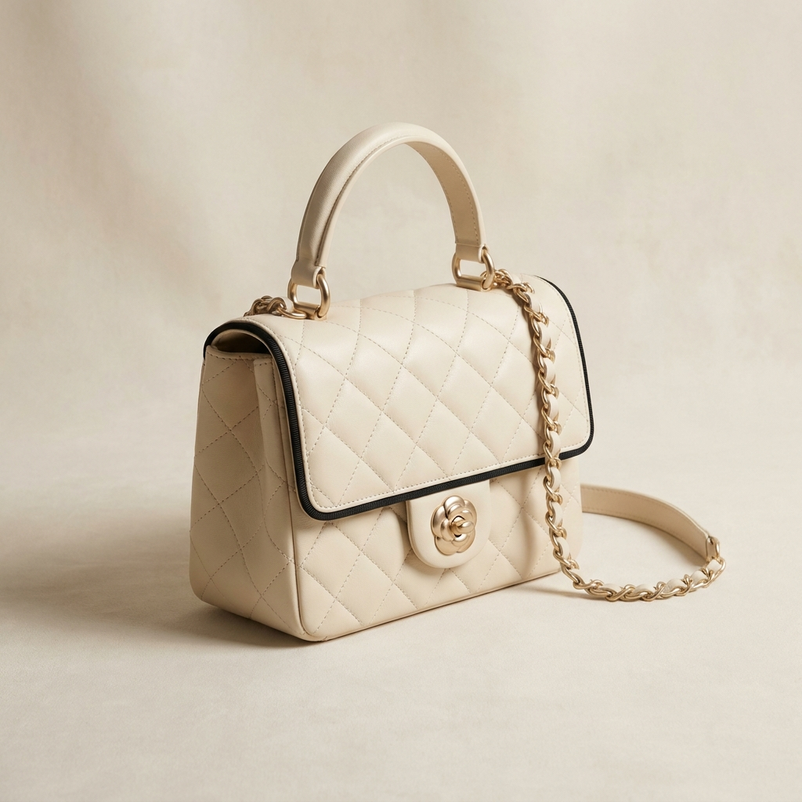
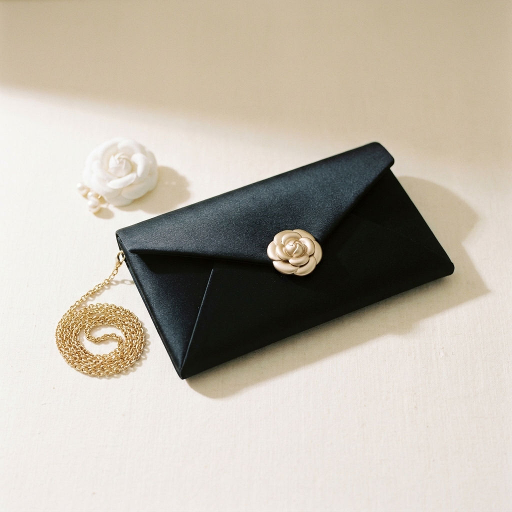
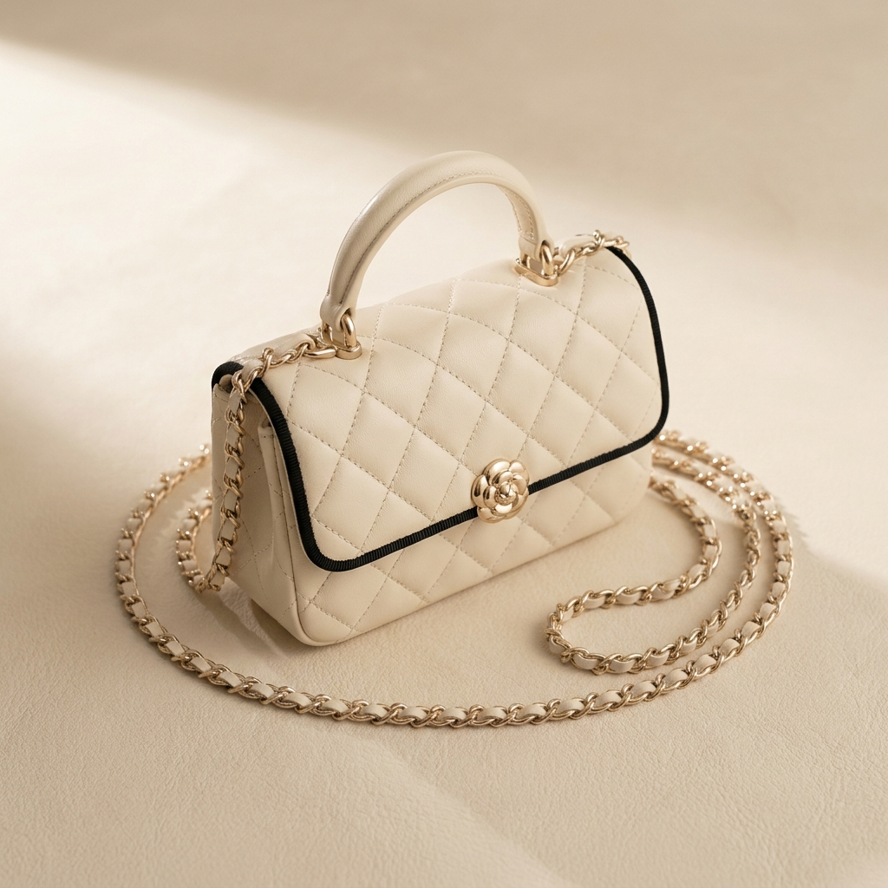
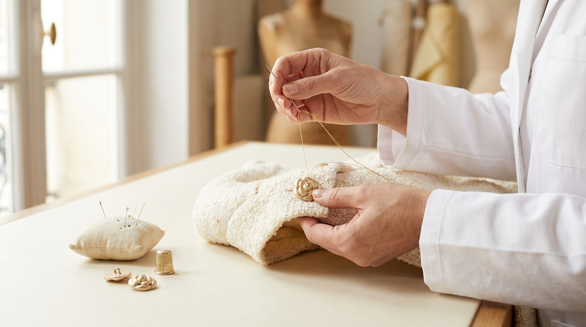

La Collection
SS27 — 4점의 가죽 라인업




L'Atelier · Le Cuir
« Avant la peau, l'or. »
Each Aldore bag is finished with the maison's sculpted champagne-gold camellia clasp — the same hardware that closes the front of the Tweed Doré jacket. Cast in solid brass, hand-buffed, then plated with a 2.5-micron champagne-gold finish, each clasp passes through eight pairs of hands before it is set onto the leather.
ALDORE의 가방은 — 가죽이 아니라 골드 카멜리아 클라스프에서 시작합니다. Le Tweed Doré 자켓의 앞단추와 같은 하드웨어 — 솔리드 브라스로 주조하고, 손으로 광택을 내고, 2.5미크론 샴페인 골드로 도금한 뒤, 8쌍의 손을 거쳐 가죽 위에 자리잡습니다.
가죽은 프랑스 남부의 한 가족 태너리에서, 식물성 무두질로만 처리된 베지터블 램스킨을 사용합니다. 한 점의 가방에 약 12시간의 핸드워크.
Discover the Maison Codes →Sur Mesure
« Sur rendez-vous uniquement. »
원하는 가죽·하드웨어·이니셜을 메종의 아틀리에에서 직접 의논하실 수 있습니다.
파리 6구 Rue de Sèvres 부티크 또는 한국·도쿄·뉴욕 부티크에서 예약제로 진행됩니다.